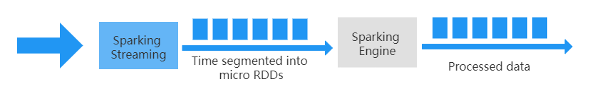

Looking at IoT from a data perspective
The first step: data collection from a data source
Data collection from data sources is to realize various data digitization tasks through various IoT devices. At the same time, it may also be necessary to temporarily store the data and prepare for the uploading of the data.
Because there are various types of data, such as temperature, humidity, formaldehyde content, as well as images, sounds, vibrations, etc., the equipment that collects these data also has obvious diversity.
In addition to the software and hardware development involved in traditional embedded systems, sensors are the key components that need to be focused on in this part. With the development of the Internet of Things, new applications are emerging, such as wearable devices for monitoring human heart rate and blood oxygen saturation, and optical sensors for measuring soil reflectivity and plant color in smart agriculture.
After collecting the data, you need to use the network to transmit the data to the cloud server.
Step 2: Data Transfer
Data transmission is to report the collected data to the cloud platform quickly and reliably. The technical difficulty here is to achieve high concurrency. Because the number of IoT devices is huge and they are constantly generating data, the massive amount of data poses a challenge to the performance of cloud platforms. Only with the ability of high concurrency can the cloud platform effectively and reliably realize data transmission. The realization of high concurrency requires the help of distributed architecture design and the use of related technologies such as load balancing, message queue, and cache.
Step 3: Data Storage
After the data transfer is completed, the problem you have to face is the storage of massive data.
For example, a shared bicycle will generate 1MB of data a day, and if it is calculated based on the number of 20 million vehicles, 20TB of new data will be generated every day. In a smart city system, an 8-megapixel camera can generate 3.6GB of data in an hour. In a city, the data volume of cameras alone can reach hundreds of petabytes a month.
In addition to a large amount of data, the types of data are also very rich. They can be roughly divided into three categories, which require different storage methods:
Structured data
Semi-structured data
Unstructured data
Structured data
For example, the relationship between users and devices, user information, device parameters, etc., are still suitable for relational databases. Based on relational databases, we can easily implement “add, delete, modify, and check” data, and can easily implement transaction operations to ensure that data operations meet the ACID characteristics (that is, Atomic, Consistency, Isolation, and Durability).
In order to meet the challenges of big data on computing and read and write performance, database systems need to use the power of distributed architecture (horizontal expansion), then you can use distributed databases.
Distributed relational database
The initial practice in the industry is to sub-database and sub-table, and then use database middleware to realize functions such as association query, primary key avoidance duplication, paging query, and transaction consistency. However, there are many drawbacks to this method. For example, database and table sharding need to be carefully designed according to the characteristics of business data, and this operation of database and sharding will definitely involve very troublesome data migration; the efficiency of executing SQL through a middleware is not high; Transaction consistency is difficult to guarantee, and it is often necessary to achieve “eventual consistency” in applications.
To solve these problems, distributed relational databases appeared. It is also often referred to as a NewSQL database. Its advantages are mainly reflected in the following three aspects.
High scalability. NewSQL inherently supports data sharding, supports dynamic addition of nodes, and does not require troublesome data migration, so it can easily meet the storage requirements when data continues to grow.
High concurrency. Compared with the disk-based design of a stand-alone relational database, NewSQL makes better use of memory in design, so SQL execution efficiency is very high. In terms of transaction support, NewSQL has efficient distributed transaction features. Therefore, it can realize the reading and writing of massive data, as well as the query and update of a large number of users.
High availability. NewSQL uses Paxos or Raft protocol to achieve multi-copy storage, and also supports automatic selection of master nodes, which ensures that the failover time of the database is very short.
Therefore, for scenarios that require strongly consistent transactions (such as payment transactions in the shared bicycle IoT system), and scenarios that require complex queries based on relational models (for example, the query of lost bicycles in shared bicycles involves user information table, bicycle information table, and riding record table), when the single-machine relational database can no longer meet the needs of big data, the distributed relational database can be considered. Especially when the previous business has been developed based on the relational database and is running in the actual service environment, the distributed relational database is simply a boon for business developers. In this case, if you want to use other types of databases which does not support the SQL language, the business code needs to be modified and adjusted a lot.
In practice, open-source options for distributed databases include TiDB、[CockroachDB, etc. as well as commercial products, such as Alibaba’s OceanBase.
In addition, sensor devices in the Internet of Things continuously generate new data over time. To store this type of data, you can choose a time-series database for higher read, write and query performance.
Time series database
The solution of a distributed relational database is obtained from the perspective of increasing capacity. So, can we find other solutions from the perspective of simplifying the problem?
One such scenario is the application system of sensors in IoT, such as sensors monitoring temperature and humidity conditions in cold storage. These sensors will continuously report data according to a certain period (for example, once every 1 minute). Such data is arranged in chronological order to form a series of data points, so it is called time-series data.
Time series data has the following characteristics in terms of reading, writing, storage, and analysis and processing:
Time series data is continuously written, generally using a fixed frequency, and there is no obvious change in the amount of writing. The number is very large, and the demand for concurrent writes is high. However, the data is rarely updated, and the old data is basically not required to be updated except for modification in special cases.
There are few reads of time series data. Compared with the high concurrency and high frequency of writes, the read requirements are mainly for data analysis applications, and the concurrent access volume of analysis applications is relatively small.
Time series data is highly time-sensitive. Generally, the newer the data, the greater the value, and the old data will lose value quickly.
The data analysis of time series data is mainly concerned with new data, and the probability of old data being queried and analyzed is not high. Older data is generally a coarse-grained read analysis. And when it is analyzed, it is generally based on the time range reading analysis, and the probability of reading a certain record is very small.
Based on the characteristics of time series data structures and applications, time-series databases have been developed by people, which have become very popular with the application of the Internet of Things in recent years. Time series database simplifies many unnecessary functions of the relational database, such as using LSM tree with low read performance instead of B+ tree storage structure. It focuses on supporting high-concurrency data writing, adopts a higher compression ratio compression algorithm to support the storage of massive data, reduces storage costs, and supports efficient grouping and aggregation computing of massive data through methods such as preprocessing.
What are the specific products of the sequence database?
The first is open source software, you can choose products like InfluxDB， KairosDB, and OpenTSDB
In addition, cloud service companies generally develop their own time-series databases, such as Alibaba’s TSDB and Amazon’s AWS Timestream. Among them, TSDB also extends support for spatial information to handle requirements such as geofencing and spatial trajectories.
Semi-structured data
Such as JSON-structured data, logging, etc. The storage of these data generally adopts NoSQL database products.
Semi-structured data contains related markup that separates semantic elements and stratifies records and fields. For example, the curly brackets “{}”, the square brackets “[]”, the colon “:”, the comma “,” in JSON format data JSON are to separate semantic elements, the content before each colon is the field, and the following is the record.
The characteristic of semi-structured data is that its structure is not fixed, and entities belonging to the same class can have different properties, which shows that it has good scalability. Also, even if they are grouped together, the order of the properties doesn’t matter. These characteristics determine that it is difficult for us to establish the structure and relationship of semi-structured data according to the data model of relational database. In addition to JSON, common semi-structured data is XML, etc. In application systems, log files are typical semi-structured data.
To store semi-structured data more efficiently, we can choose a NoSQL database. It is stored in key-value pairs, and the structure is not fixed, and each tuple can have different fields. Each tuple can add some of its own key-value pairs as needed, so that the database is not limited to a fixed structure, which can reduce some time and space overhead.
In fact, we know that SQL is just an interface for manipulating database data, so the “No” in NoSQL really means No Relational, and the professional name should be a non-relational database.
Because the non-relational database no longer emphasizes data consistency, does not support transaction operations, and no longer pays attention to complex relational table queries, it has better processing performance for massive data, and the stored data format is richer and easy to expand. Some non-relational databases use memory to store data in order to support faster query speeds.
There are also many open source products for non-relational databases, such as CouchDB、Redis、HBase、Cassandra, etc. You can choose based on your familiarity and ecological support. Commercial options also include products such as MongoDB and Oracle NoSQL.
Unstructured data
Unstructured data does not have a predefined data model and cannot be represented simply by the two-dimensional table structure of the database. Its format is very diverse, and the standard is not uniform. For large-scale storage of this type of data, we can only use distributed file systems.
Such as video, audio, and other data. They are generally stored in the form of files, and the widely used distributed file system HDFS in the Hadoop system is a commonly used option. Other distributed file systems include FastDFS and Ceph.
The realization of massive data storage lays a solid foundation for data processing.
Data Migration Tool
The migration of data is more troublesome and needs to be avoided as much as possible in the design stage. However, there are some data migration needs that you may not be able to avoid. For example, you need to import the data in the MySQL database in the running system into the NoSQL database HBase for analysis and processing using big data technology.
For such a requirement, we have to use tools to complete it. The Sqoop project is a relatively well-known tool. It bridges the gap between Hadoop’s big data storage systems and relational databases. With Sqoop, you can easily import MySQL data into HBase. In addition, Sqoop adopts a plug-in architecture called Connector. Different Connectors can also connect to different data sources, and you can also customize a dedicated Connector according to your own needs to complete some special migration work. Therefore, Sqoop can also complete migration tasks between NoSQL databases (such as CouchDB) and file storage systems (such as FTP).
Of course, Sqoop also has a disadvantage, that is, it is not suitable for incremental data update, also known as CDC (Change Data Capture). If the method of regularly scanning the entire table based on Sqoop is used, the execution will be inefficient and the delay will be serious. At this time, LinkedIn’s open-source Databus project can be considered, or Alibaba’s Canal, both of which are based on analyzing database log files to efficiently implement incremental data updates.
Data Processing
In the data processing stage, your ability to process massive data is very tested, and you need to use a big data computing engine. The processing of big data can be divided into two categories according to the application scenarios:
Batch processing, as the name suggests, is a method of uniformly processing batches of data. Batch processing is suitable for non-real-time processing of massive static data, and the latency is relatively high. It is also called offline computing. It is mainly used in scenarios such as offline reporting and historical data aggregation. For example, if we need to know the total riding time and distance of shared bicycles in a month, and the bicycle with the farthest riding distance, we need to aggregate the data of all bicycles to obtain the desired results. The calculation process of batch processing may take a long time, minutes, hours, or even days.
Stream processing is the real-time processing and calculation of data streams. Compared with batch processing, it has the characteristics of low latency, which can generally reach the level of milliseconds or even microseconds. This can meet the needs of massive data for high throughput processing capacity. It is mainly used for real-time monitoring, trend prediction, real-time recommendation, and other scenarios. For example, the real-time judgment of temperature and humidity data based on high and low thresholds requires stream processing.
The classic idea of batch processing: MapReduce’s divide and conquer
First, Google (Google) published a paper on a distributed computing framework in 2004 based on internal company practices. This paper proposes the design idea of the MapReduce computing framework, which is mainly used to solve the index generation problem of massive web pages. Next, the developers of the open-source search engine project Nutch developed an open-source Hadoop MapReduce implementation based on this design idea.
Specifically, it is to divide the data into multiple copies of the same size, then create multiple tasks accordingly, and process these data fragments in parallel. This process is defined as the Map process; then, the calculation results generated in the Map process are generated. The final summary is performed to generate output results, and this process is defined as the Reduce process. The combination of these two processes is MapReduce.
An efficient open-source framework for batch processing: Spark aiming to be “lightning as fast”
How does Spark create an efficient framework?
First of all, in terms of the computing model, Spark abandoned the two process models of MapReduce and adopted the DAG (Directed Acyclic Graph, directed acyclic graph) model. Using DAG to describe the data processing process should be said to reflect the essence of the data processing process. In this way, on the one hand, developers can describe complex computing logic more easily, and on the other hand, the computing framework can more easily automatically optimize the entire data flow, such as avoiding repeated calculations.
Second, Spark’s data access makes full use of memory.
Its data shards are called Partitions. Then it proposes the concept of RDD (Resilient Distributed Datasets) based on Partition. The so-called “elasticity” means that data can be stored on a disk or in memory, and the storage location can be dynamically adjusted according to memory usage. This improves computational efficiency.
Stream Processing Open Source Frameworks: Storm, Spark Streaming, and Flink
One of the earliest representatives is the Storm framework developed by the social networking company Twitter. An important concept of Storm is the data stream (Stream). Compared with the batch processing method for data blocks, the so-called stream processing is the processing method for data streams. Storm describes Stream as an infinite sequence of tuples. Stream is generated from a faucet (Spout), that is, the Spout converts the data to be processed into a Stream composed of Tuples. Then Stream is processed by the adapter (Bolt) to output a new Stream. Among them, the processing of Bolt can be any operation such as filtering, function operation, and Join. You can see the example flowchart below:
The Spout, Bolt, and Stream in the picture together constitute another important concept in Storm, Topology. You should be able to see that Topology is a DAG (Directed Acyclic Graph). What is running in the Storm framework is each topology, and because it is stream processing, it will continue to run until it is manually terminated.
The open-source framework for stream processing that basically appeared at the same time as Storm is Spark Streaming. Spark Streaming converts data streams into small RDDs. These small pieces of RDD form a streamed sequence of RDDs, called a DStream, so its stream processing is called “micro-batching”.

Obviously, its real-time performance depends on the size of each small RDD, and the real-time performance is not as good as the Storm framework; however, this method also makes its throughput capacity greater than Storm. Overall, you can think of Spark (including Spark Streaming) as a block-based data model that provides both batch and stream processing capabilities.
Flink uses data blocks as a special data stream and provides batch processing capabilities by reading and processing data blocks from persistent storage systems such as files in a Stream (stream) manner. On this basis, Flink provides a unified batch and stream processing framework, which is the so-called “stream-batch integration” data processing framework.
Although Flink has not been around for a long time, with its excellent design, its performance is very strong, and its latency can be as low as microseconds. It is an ideal choice for scenarios with high real-time computing performance requirements. In the industry, Alibaba Cloud and Tencent Cloud support Flink very well; many companies are also gradually trying to use Flink to replace the Storm framework in practice.
Step 5: Data Application
The data application is at the top of the whole system and is the ultimate goal of the IoT system. The core point of our focus is to create value through data, and the basis of realization is various algorithms.
How does data generate value?
There are four ways to generate value from data:
Visualization
Dig
Forecast
Control Decisions
The most straightforward approach is visualization, also known as chart analysis. Visualizations can very intuitively show people what the data means. For example, if the geographical location of a shared bicycle is given to the user with latitude and longitude coordinates, it is tantamount to not giving this information; and if it is displayed in the form of a cursor on the map, the user can immediately know the position and distance of the bicycle relative to him. Similarly, there are curves and bar charts to represent data trends, pie charts to represent percentage data, and network diagrams to represent the relationship between things, etc. They all provide ideal presentation means for raw data and analysis result data.
A step further than chart analysis is mining analysis. We can analyze the laws and associations of data based on various algorithms. This method is based on various ready-made models or customized models, which can extract hidden laws and connections from the data that cannot be seen by manual analysis.
Another advanced approach is predictive analytics. As we accumulate more data and experience, we can use algorithms to build predictive models. When newly collected data is fed into the model, we can predict future conditions.
The last method is to control the decision. IoT devices may have actuators that IoT systems can control based on business goals. The control decision is calculated based on the collected data based on the algorithm.
What are the algorithms that can be used for data analysis?
Mining analysis, predictive analysis, and control decision-making use various algorithms of statistical analysis, machine learning, including artificial intelligence. These algorithms fall into two categories: supervised learning and unsupervised learning.
Supervised learning algorithms require us, like conscientious parents, to explicitly tell it “what is right” and “what is wrong”.
Unsupervised learning algorithms are faced with “shepherd” parents and need to distinguish the “outliers” in the data by themselves.
Common supervised learning algorithms include decision trees and SVM (support vector machine) algorithms. Decision trees are similar to the expert systems I described above; the SVM algorithm is a classification algorithm that can also be used for linear and nonlinear regression problems, such as building user profiles based on riding habits.
Unsupervised learning algorithms include the K-means algorithm and so on. The K-means algorithm is a clustering algorithm. For example, based on the number of times and time periods of shared bicycles, we can distinguish between faulty and normal bicycles.
In short, a principle of using algorithms is that you must first analyze the characteristics of the data, grasp the general tendency, and then choose the appropriate algorithm according to the goals you want to achieve.